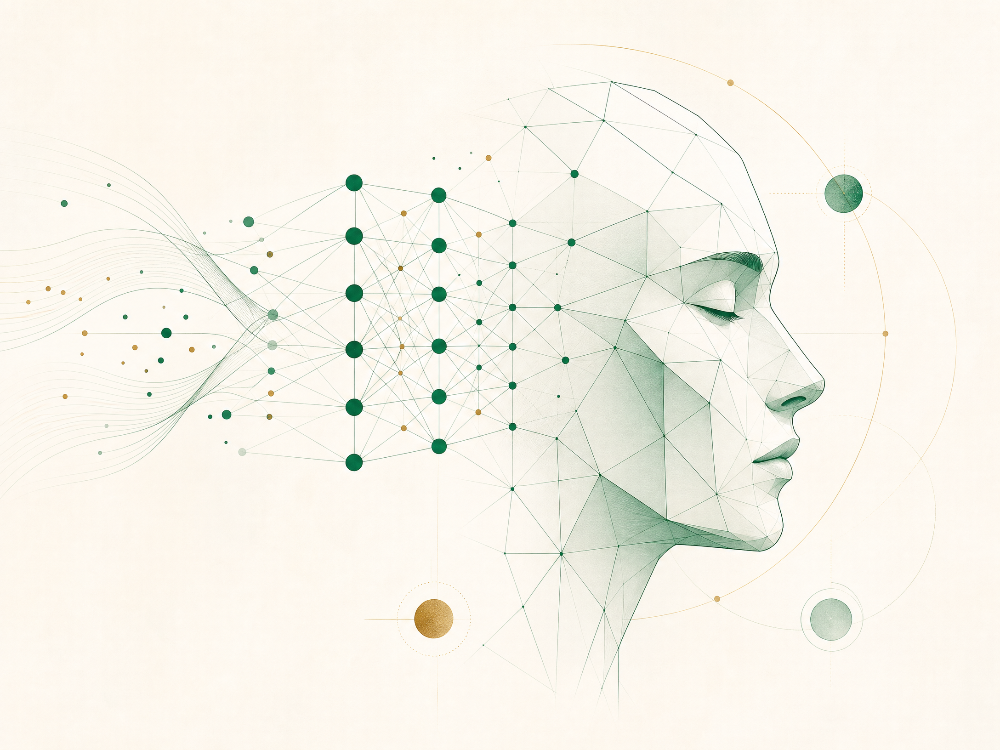

Programming
Python · Java · C++ · C#.NET · PHP · JavaScript
IT ENGINEER · PORTFOLIO 2026
Full-stack developer and IT engineer with an analytical approach to software, data, and intelligent solutions.
↘Profile
Suhaib Hamoud Abdulmola Hasan is an Information Technology Engineer with a Bachelor’s degree from Taiz University. His work brings together responsive web development, software systems, databases, networking, and AI/ML research.
His technical foundation spans Python, Java, C++, C#.NET, PHP, JavaScript and ASP.NET, supported by hands-on experience with ORACLE, MySQL and SQL Server.
Start a conversation ↗Capabilities
CORE EXPERTISE
Python · Java · C++ · C#.NET · PHP · JavaScript
HTML · CSS · Bootstrap · ASP.NET · UX/UI Design
ORACLE · MySQL · SQL Server · Access DB
Experience
PROFESSIONAL RECORD
Full-stack delivery — responsive interfaces and robust server-side logic.
API & data integration — efficient APIs and database integration to strengthen application functionality.
Performance & security — focused on application speed and implementation of security best practices.
Team standards — collaborative delivery with tested, high-quality coding practices.

01 / AISelected project
2021 — 2022 · TAIZ UNIVERSITY
Graduation project exploring the analysis and implementation of facial emotion detection and recognition using Convolutional Neural Networks.
Foundation
2021 — 2022
Al-Saeed Faculty for Engineering and Information Technology, Taiz University
2014 — 2015
13 June Najd AL-Nshama School, Taiz
LANGUAGES
Reading · Travelling · Swimming